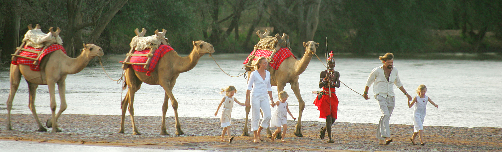
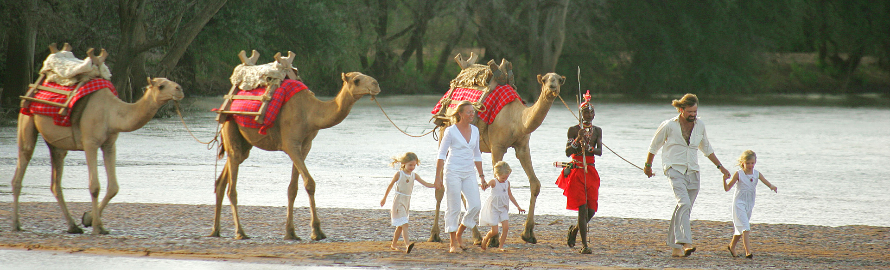
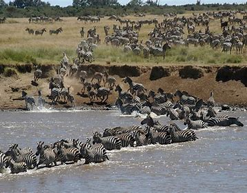

Safari Activities
 

Maasai-Mara Hot Air Baloon
For a truly unique perspective on this spectacular wilderness, dawn Balloon safaris, carried out daily from several lodges, can be booked through most Safari companies. This incredible once in a lifetime experience offers the visitor a fantastic view of the great plains of the Mara and the chance to drift unobtrusively over the great herds below.
Helicopter Safaris
For those with larger travel budgets who wish to cover plenty of ground on their safari, charter helicopters are available. A helicopter is a perfect way to access remote areas quickly and easily, without need for landing strips or clearances. Some of the ranches in Laikipia can arrange ‘heli-camping’ in which a helicopter is used to transport guests to remote destinations where a luxury camp awaits. This is also an out of this world way to see the local landscapes and wildlife.
Migration Safaris
October sees the herds turn southward and repeat the same journey, where the renewed grasslands await. The migration can be experienced on early morning game drives in customized vehicles, walking safaris with Maasai Warrior guides, horseback safaris in areas surrounding the Mara, or even from hot air Balloon safari over the herds.

Camel Safaris
Camel Safaris are becoming an increasingly popular way to explore Kenya’s wilderness. The camel is perfectly adapted to this landscape and is widely used throughout Northern Kenya A camel safari in Kenya is a once in a wonderful experience, riding through the bush with only the sounds of the wild and the soft tinkling of the camel bells, you will find yourself travelling at a relaxed pace, moving through the wild in tune with the rhythms of nature.